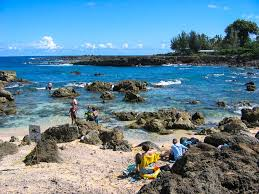
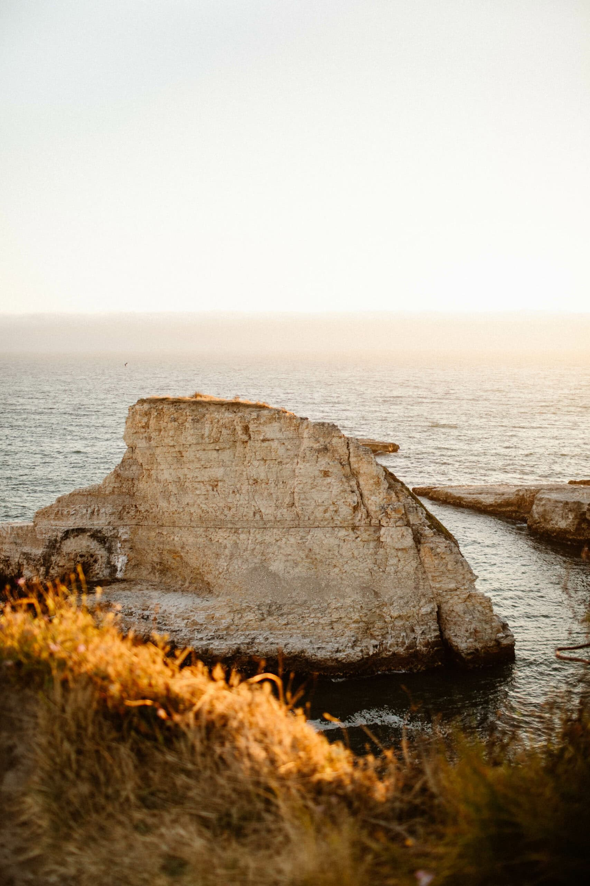

Shark's Cove
Shark's Cove is a popular snorkeling location with clear water and colorful sea life.
Snorkeling Area

Rock Formations

Shark's Cove is a popular snorkeling location with clear water and colorful sea life.

